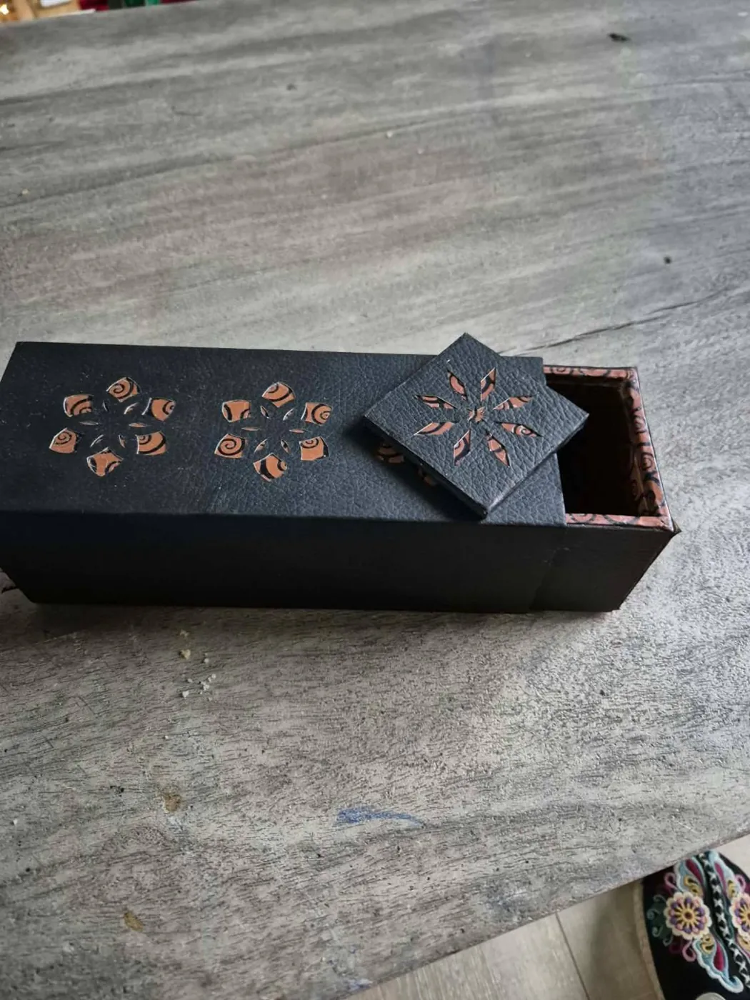

Sur commande
Coffrets et boîtes personnalisés sur commande
Une couleur, un format, un motif ou une occasion particulière : Lou imagine avec vous une pièce en cartonnage rien qu’à vous.
Écrire à Lou
Sur commande
Une boîte rien qu’à vous
Une couleur, un format, un motif ou une occasion particulière : Lou crée aussi sur commande.
- Coffret cadeau pour une naissance, un mariage, un anniversaire
- Boîte à bijoux ou à souvenirs aux couleurs de votre choix
- Carnets et marque-pages à offrir, en série pour un événement
- Cadres assortis à votre intérieur
Contact
Une pièce vous plaît ? Écrivez à Lou.
Pour réserver une création, commander une pièce sur mesure ou savoir où la trouver.
Téléphone et e-mail de Lou à ajouter.
L’art du cartonnage
par Lou
Créations faites main · Hauts-de-France
Questions fréquentes
Peut-on commander une boîte personnalisée ?
Oui : couleur, format, motif ou occasion, Lou crée sur commande. Écrivez-lui avec votre idée.
Quel délai pour une commande ?
Il dépend de la pièce et de la période. Pour Noël ou un événement, pensez à commander quelques semaines à l’avance.
Faites-vous des coffrets pour les mariages ou les naissances ?
Oui : coffrets souvenirs, boîtes à alliances, carnets d’invités ou marque-pages à offrir aux invités.